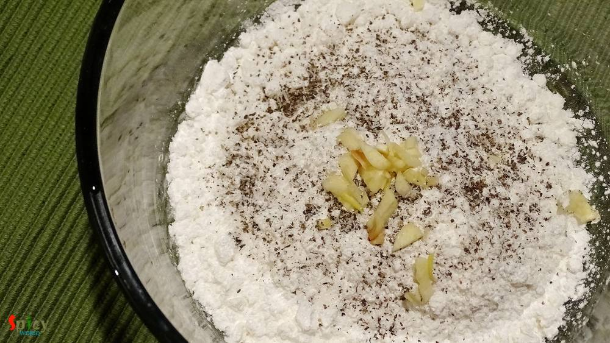
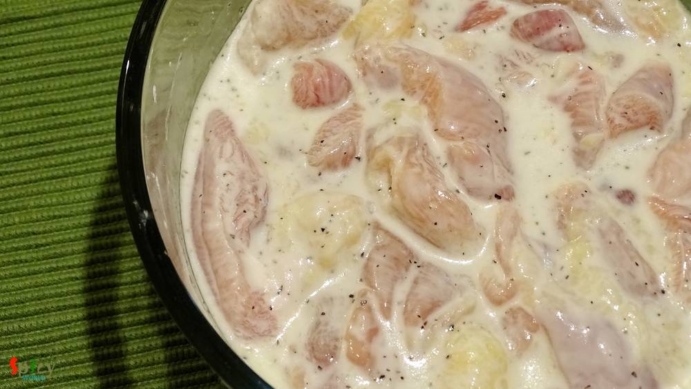
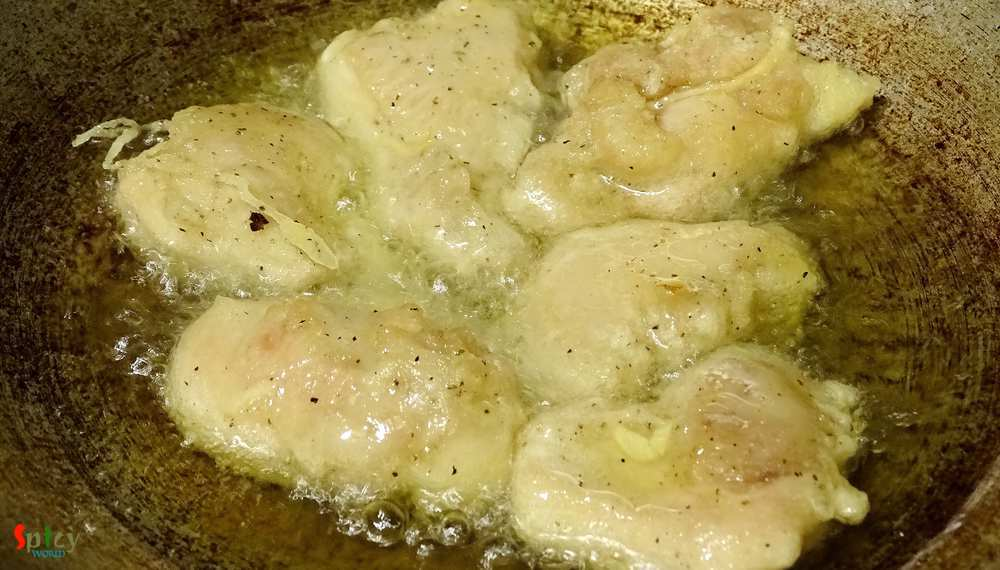
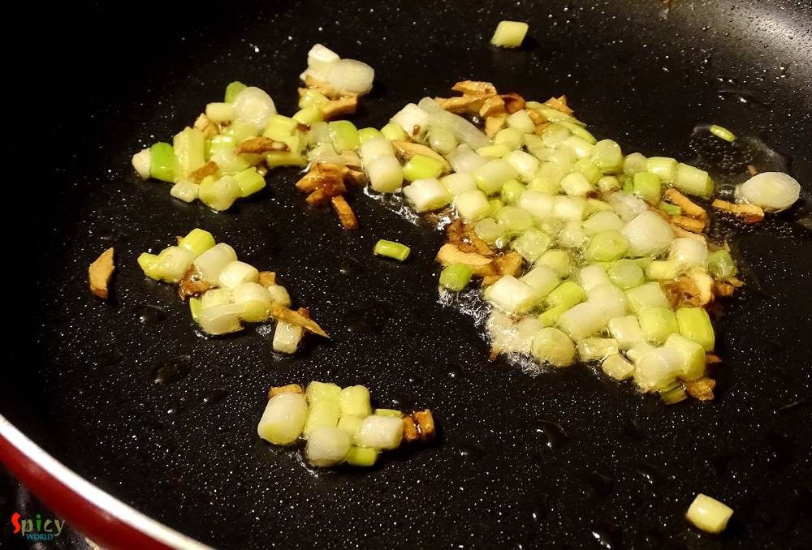
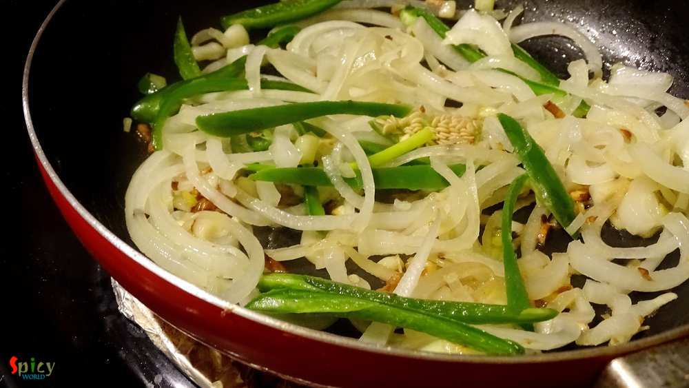
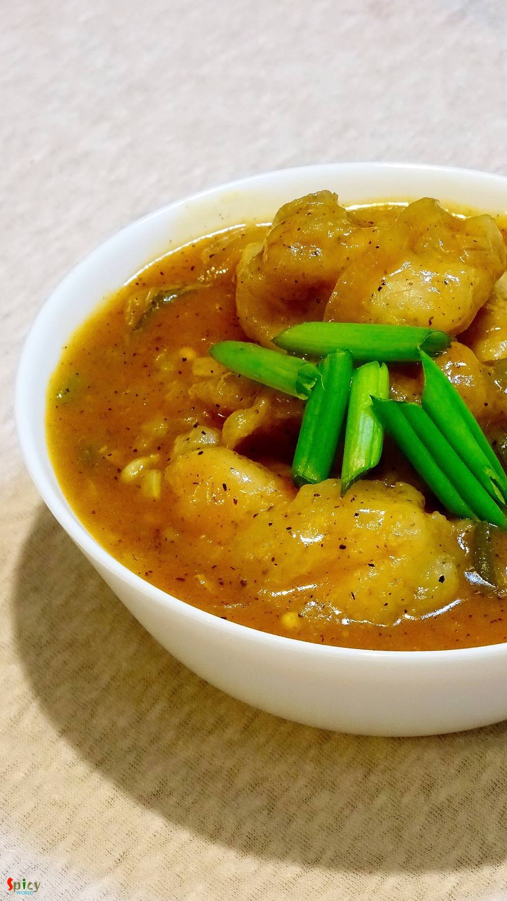

Simple and Easy Recipes
Chicken Manchurian
© 2016 Spicy World, Published on: Mar 23, 2016
Whenever I buy different types of sauces from market, can't think anything but Chinese dishes. With few ingredients you can creat such a splendid item. So, last of last weekend I went ahead and made 'chicken manchurian', the more I can say about it's delicious tangy and spicy taste the less it seems. We enjoyed it with some fried rice but you can also serve this with hakka noodles or simple rumali rotis. I told you before that I just adore the combo of rumali roti and chinese maincourse dishes, don't know why ? Try this manchurian recipe in your kitchen and enjoy a restaurant style dinner with your loved ones.

Ingredients
- 10 - 15 boneless chicken breast pieces.
- 4 - 5 tablespoons of cornflour.
- 2 teaspoons of chopped garlic.
- 4 slit green chilies.
- 6 - 7 spring onions.
- Half cup of thinly sliced onion.
- 1/4th cup of thinly sliced capsicum.
- Salt.
- 1 teaspoon of ground black pepper.
- 1 teaspoon of soy sauce.
- 2 tablespoons of chilli sauce.
- 1 teaspoon of sesame oil (optional).
- 1 cup of chicken stock.
- White oil.

Steps
Put the cornflour, 1 teaspoon of chopped garlic, some salt and half teaspoon ground black pepper in a mixing bowl. Mix well.

Then add some water and make a semi thin batter. Add the chicken pieces into the batter and keep it for 20 minutes.

Heat a cup of oil in a pan and fry the chicken pieces for 3-4 minutes, few at a time. Do not make them too much golden.

Heat 2 tablespoons of oil in another pan.
Add 1 teaspoon of chopped garlic and chopped spring onion whites. Saute for a minute.

Then add sliced onion, capsicum and green chilies. Fry in high flame for 3-4 minutes.

Now add the chicken stock, salt, remaining ground black pepper, soy sauce and chilli sauce. Cook in high flame for 3-4 minutes.
Then add fried chicken pieces, sesame oil and 2 teaspoons of cornflour diluted water. Mix well for 4-5 minutes.
Turn off the heat and sprinkle some spring onion greens.

Your chicken manchurian is ready ...
Enjoy this hot with some fried rice or hakka noodles ...
")